| Namn | Omsättning (tkr) | EBIT (tkr) | Marginal |
|---|---|---|---|
| Christian Berner AB | 267683 | 14240 | 5.32% |
| Christian Berner AS | 93866 | 4456 | 4.75% |
| Christian Berner OY | 93126 | 7249 | 7.78% |
| A/S Christian Berner | 4908 | 531 | 10.82% |
| Zander och Ingeström AB | 294371 | 34228 | 11.63% |
| Bullerbekämparen AB | 41534 | 3437 | 8.28% |
| Empakk AS | 67684 | 4977 | 7.35% |
| Swedenborg Ingenjörsfirma | 89593 | 18774 | 20.95% |
| Autofric AB | 60170 | 7617 | 12.66% |
Aktiecase Berner Industrier
aktieanalys
bolagsanalys
aktiecase
Berner Industier har ömsat skin och städat på torpet, nu är det dags att förvärva, är det värt att vara med på tåget?
NoteDisclaimer
Tänk på att investeringar alltid innebär ett risktagande. Gör alltid din egen analys innan eventuell handel.
CautionEget ägande
Jag äger aktier i Berner Industrier.
Note2025-12-05
Sålt halva posten i Berner Industrier, anser att bolaget är rättvist värderat runt 89 SEK aktien. Orderboken tyder på ensiffrig tillväxt och marginalresan har huvudsakligen gjorts. Anser att Berner är det mest attraktiva risk/reward bland serieförvärvarna.
NoteQ2 2025 uppdatering
Q3 2025:
Finansnettot gick ner, men skuldsättningen ökade. Bra rapport.
NoteQ2 2025 uppdatering
Allt pekar åt rätt håll för Berner: Förvärv, bra orderingång, bra omsättningstillväxt, fina marginaler.

TipKPIer
EV/EBIT: 18.0
Rev CAGR 3 år: 9%
Börsvärde: 909 MSEK
EV: 1030 MSEK
Bakgrund
Berner Industrier är en industrigrupp med nio dotterbolag inom teknisk distribution och hållbar teknik som tillsammans omsätter 1 miljard. Gruppen grundades 1897 och var under 120 år enbart Christian berner bolagen, för att de senaste 8 åren göra en stor omsättning till en serieförvärvare, inspirerade av Indutrade och Lagercrantz. Berner Industrier, då under namnet Christan Berner Tech Trade, klev in på Nasdaq Stockholms huvudlista 2017. Bolaget köpte Zander & Ingeström 2018 och fortsatte med förvärven, ett per år fram till 2021.
Från 2022 fram till idag har bolaget genomfört ett omfattande skifte. Ny vd, stora klev mot en decentralisering, många underliggande dotterbolag har upplevt en rockad i ledning då 7 av 8 bolag har fått en ny vd. På förvärvsfronten har det inte hänt något och därmed har nettoskuldsättning i bolaget har minskat från 213 MSEK till 120 MSEK. Soliditeten har ökat från 32% till 40% under samma period. I april 2025 förvärvades första bolaget sedan 2021.
NoteMålsättning
Målsättning
- Omsättningstillväxt: >10 % (ink förvärv)
- EBITA-marginal: 9% – (FY24 på 6.1%, pga svag marginal inom teknik dist segment)
- Soliditet: 35% (just nu 40%)
- Avkastning på eget kapital: 25% (19,5% under FY24, snittar ~19% senaste 4 åren)
- Utdelning: 30–50%
Berner liknar ett litet Lagercrantz eller Indutrade, där företaget avser att förvärva B2B-bolag med runt 50-150 miljoner i omsättning till en rimlig multipel inom en nisch som är relativt liten där kundnöjdhet är centralt för att lyckas. Berner jämfört med sina peers är väldigt litet med sin ynka miljard i omsättning och 9 underliggande bolag att jämfört med Indutrades 200 bolag och 33 miljarder i omsättning.
- Bytte namn till Berner industrier efter en omröstning på årsstämman 2024, detta för att göra det tydligt vilket bolag som avses när man pratar om Christian Berner.
- Tidigare baserat i Mölnlycke, flyttade till Stockholm för 2 år sedan, 2023
Verksamheten
Berner industrier består av två affärsområden, Teknik & Distribution och Energi & Miljö. Organisationen ser ut som:
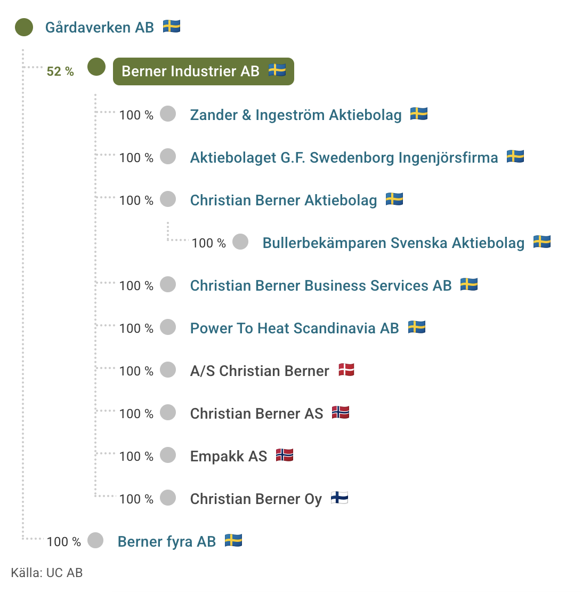
Gårdaverken är familjen Berners ägarbolag. Power to heat är en del av Zander & Ingeström efter en sammanslagning. Med ett par justeringar går det att se att underliggande bolag ser ut ungefär som följande enligt senaste tillgänglig data:
Vissa brister är kända, marginalerna behöver inte vara representativa pga koncernstruktur, men det ger en känsla för var omsättning och kanske till viss del var vinsten genereras inom Berner Industrier. Data baseras på 2023 data för det mesta, under 2023 var teknik och distribution starkare än under 2024. Berner industrier har själva ingen rapportering på bolagsnivå utan på segmentnivå.
Teknik & Distribution
Bolagen inom affärsområdet Teknik & Distribution hjälper kunder inom både industri och offentlig sektor att minska resursåtgång, förbättra omgivningens miljö eller på andra sätt förbättra sin egen verksamhet. Dotterbolagen i affärsområdet erbjuder lösningar inom vattenrening, förpackningsutrustning, vibrationsdämpning, teknisk plast och processteknik. Bolagen agerar framför allt som lokal distributör av ledande tillverkares produkter, men har även en del egna produkter inom till exempel förpackningsmaterial och fyllningsmaskiner. Bolagen försäljning sker i huvudsak på sina respektive hemmamarknader, det vill säga de fyra nordiska länderna.
Exempel på produkter
Miljö och vätsketekniska produkter, till exempel:
- Doserpumpar
- Desinfektionssystem, i huvudsak UVaggregat
- Instrument och analysverktyg
- Filter för vätskefiltrering
Maskiner och anläggningar inom till exempel:
- Pulver och torkteknik
- Fyllning
- Förpackning av mat, och därtill hörande förpacknings material
- Förpackning i samband med e-handel Materialtekniska produkter, till exempel;
- Vibrationsdämpande produkter som till exempel ballastmattor och slipermattor för vibrationsisolering, stomljuds och stegljudsdämpning
- Konstruktionsplaster och slitdelar till industrin för att minska friktion och slitage i olika applikationer
Dotterbolag inom affärsområdet
- Christian Berner AB, Sverige
- Christian Berner Oy, Finland
- Christian Berner AS, Norge
- A/S Christian Berner, Danmark
- Empakk AS, Norge
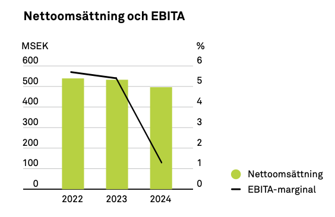
Mariginalerna under 2024 dyker och det har varit mycket fokus för ledningen att ta tag i de bekymmer som finns inom verksamhetsområdet. Vd, Caroline Reuterskiöld, förklarar i Q3 2024 att orderingången har varit sämre pga marknadsläge samt att det är svårare att förutse när större affärer går igenom. Under 2024 har mycket fokus varit från ledningen på Christian Berner. Vd tillträder sin nya roll 1a november 2024.
Jag gissar att det har varit knepigare för Christian Berner bolagen att ställa om till en decentraliserad struktur och håller tummarna att nya ledningen i respektive bolag kommer att få ordning.
TipKuriosa
William Thorndike, författare till The Outsiders, har genom sin fond, Sun Mountain Fund köpt 2% av Berner Industrier
Energi & Miljö
Huvuddelen av verksamheten är inriktad mot energi‐, process‐ och tillverkande industri, där affärsområdets olika lösningar ofta brukas för att öka dess hållbarhet vare sig det handlar om minskade utsläpp, minskade energiförluster och/eller förbättrad arbetsmiljö. Bolagen har försäljning både inom sin hemmamarknad (Sverige), såväl som på export.
Ökar hållbarheten inom energi-, process- och tillverkande industrier genom minskade utsläpp, minskade energiförluster och/eller förbättrad arbetsmiljö. Pumpar som pumpar raspolja för Preem exempelvis.
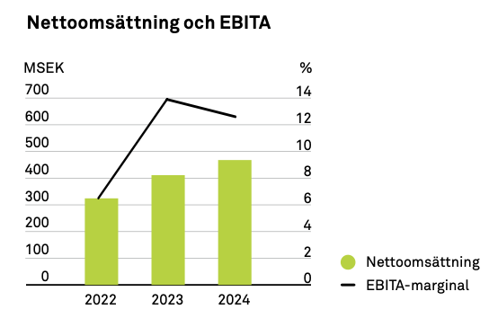
Exempel på produkter:
- Elektriska ång och hetvattenpannor
- VA-pumpar
- Högtryckspumpar
- Livsmedels- och läkemedelspumpar
- Industripumpar
- Industrispjäll
- Sprängbleck
- Ljudabsorbenter
- Bullerdämpande manöverhytter
Dotterbolag inom affärsområdet:
- Zander & Ingeström AB
- Aktiebolaget G.F. Swedenborg Ingenjörsfirma
- Bullerbekämparen Svenska AB
- Autofric AB?
Zander & Ingeström
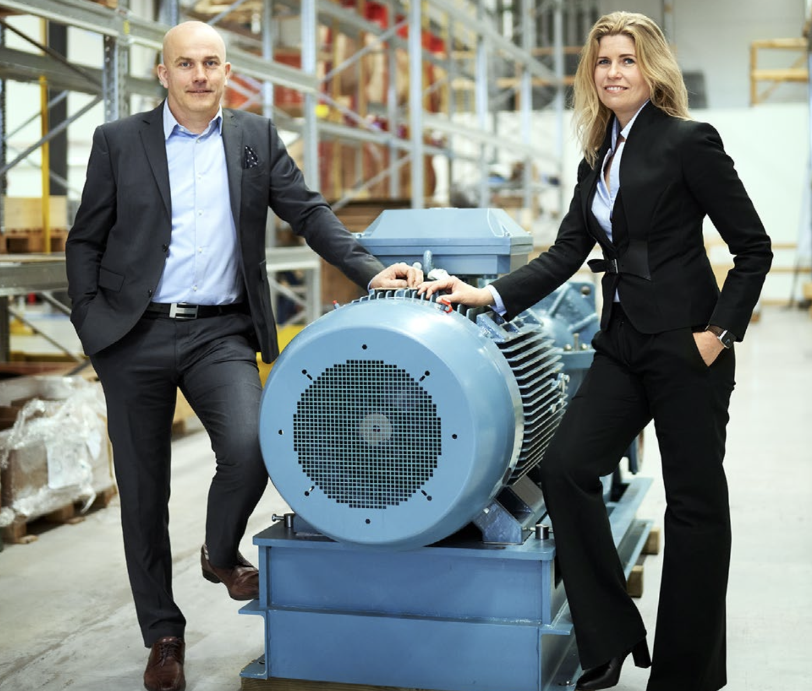
Största företaget inom gruppen är Zander & Ingeström. Zander skapar bland annat centrifugalpumpar, som går att se i bilden ovan.
Bullerbekämparen
Kapslar in olika typer av producerade enheter i en inkapsling som minskar buller. Det skapar en bättre arbetsmiljö.
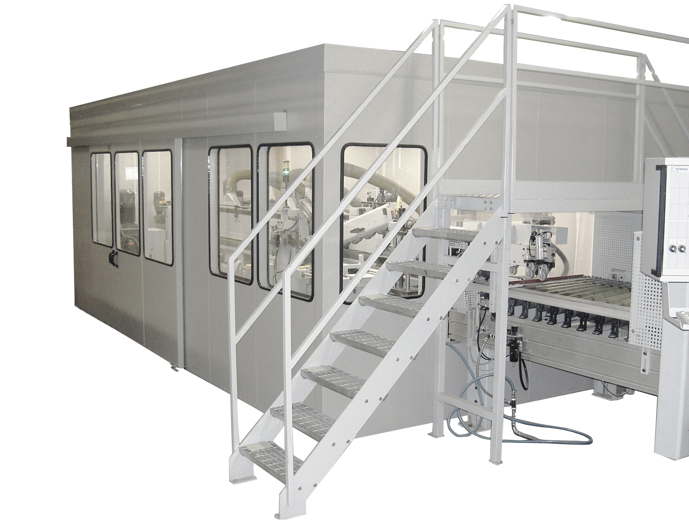
Det är lättare att kaplsa in en maskin jämfört med att försöka skapa en maskin som skapar mindre buller i samband med produktion.
Swedenborg
Swedenborg sysslar med att rena rökgaser, med ett egenutvecklat system som är lättare att installera och underhålla än andra spjäll lösningar på marknaden.
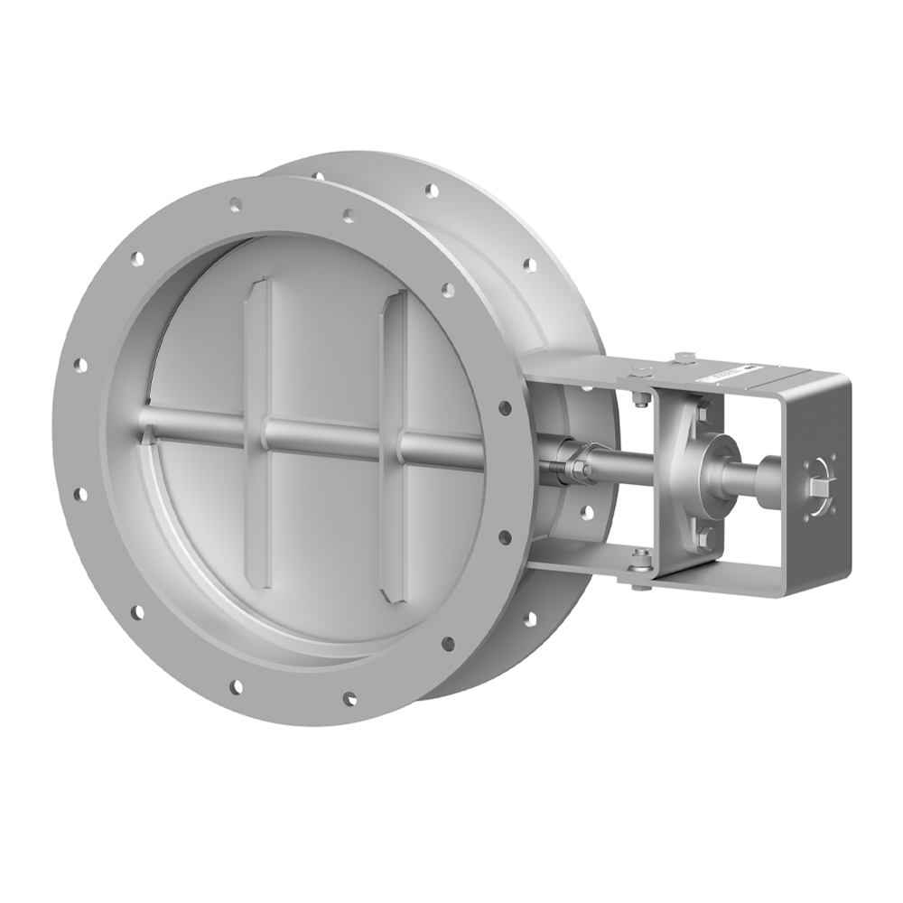
2021 förvärvades Swedenborg och idag är entreprenören, Patrik Swedenborg, bakom bolaget fortfarande aktiv. Sedan förvärvet har bolaget mer än fördubblat sin omsättning och haft en marginalresa. Det mest lönsamma och snabbväxande bolaget inom Berner Industrier.
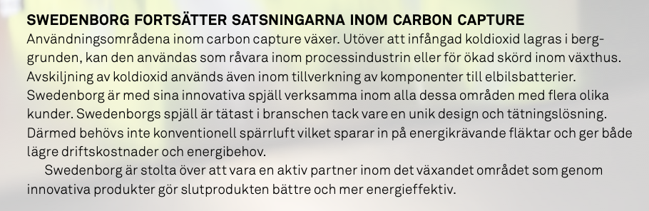
Jag tror Swedenborg kommer vara ett av de viktigaste bolagen för Berner industrier framåt. Av de 60 miljonerna som hela gruppen redovisade för helåret 2024 så bör runt 30 procent av dessa kunna härledas till Swedenborg, trots det enbart är ~10% av gruppens omsättning. Det är anmärkningsvärdet hur pass starkt som Swedenborg ser ut att gå med tanke på hur pass dålig marknaden är för ett generellt industribolag under 2024. 2025 och framåt kan säkert bli kanon om marknaden blir bättre.
Förvärv
Bolaget har minskat sin nettoskuldsättning från 213 miljoner till 120 miljoner på de första 10 kvartalen som Caroline suttit som vd (Q2 2022-Q4 2024). Nettoskulden / EBITDA är på 1,3x efter IFRS effekter. Caroline säger i senaste samtalet med investerare på Redeyes investerarträff att hon träffar många bolag och dricker kaffe. Det kommer att bli en intensivare M&A agenda framåt.
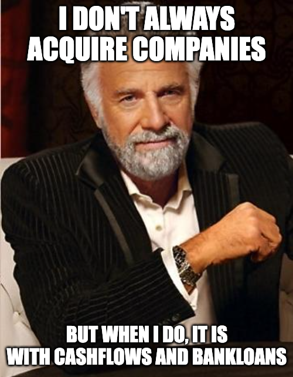
Affärsvärlden sammanställde under 2024 en lista på alla Berner Industriers förvärv, jag la in Autofric AB på sista raden.
| Bolag | Tidpunkt | Omsättning | Rörelsemarginal | Köpeskilling | EV/Sales | EV/Ebit |
|---|---|---|---|---|---|---|
| GF Swedenborg Ingeniörsfirma | April 2021 | 45,1 Mkr | 14,0% | 31,0 Mkr | 0,7x | 4,9x |
| Alfa Tec Sweden | Oktober 2020 | 32,2 Mkr | 10,6% | 15,0 Mkr | 0,5x | 4,4x |
| Empakk AS | September 2020 | 47,3 Mkr | 9,1% | 35,0 Mkr | 0,7x | 8,1x |
| Bullerbekämparen | September 2019 | 30,6 Mkr | 15,4% | 20,3 Mkr | 0,7x | 4,3x |
| Zander & Ingeström | Februari 2018 | 124 Mkr | 13,2% | 140 Mkr | 1,1x | 8,5x |
| Autofric AB | April 2025 | 59,3 Mkr | 14% | 55 Mkr | 0,9x | 6,6x |
| Totalt / (snitt) – Exl Autofric ab | 279 Mkr | 12,6% | 241 Mkr | 0,7x | 6,1x |
Sammantaget är förvärven ganska små med 30-100 mkr i omsättning, samtidigt är det antagligen bättre att förvärva fler mindre företag inom en nisch med bra marginaler jämfört med att ge sig på ett förvärv som transformerar verksamheten. Autofric AB, det senaste förvärvet och Carolines första förvärv ser ut att vara väldigt bra.
Jag skissar på att Berner Industrier förvärvar runt ett bolag om året, i liknande storlek som Autofric, vilket är ca 6% av gruppens totala omsättning.
Geografisk exponering
Halva omsättningen i Sverige, sedan stor del i Norge och Finland. Se tabell nedan för att förstå geografiska försäljningen per land.
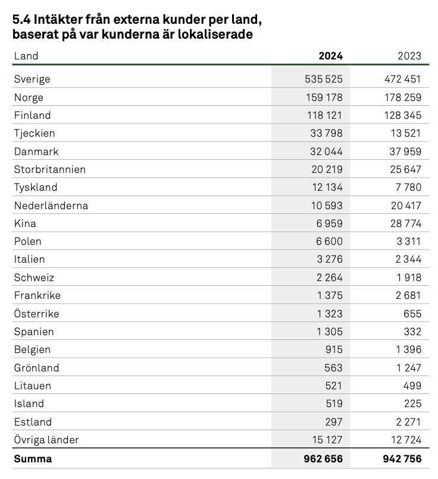
Över tid har det varit en tydlig trend med allt lägre försäljning mot bland annat Kina. År 2021 var försäljningen till Kina 40 miljoner, nu är den enbart 7 miljoner, det kan bero på att det är projekt som har levererat också.
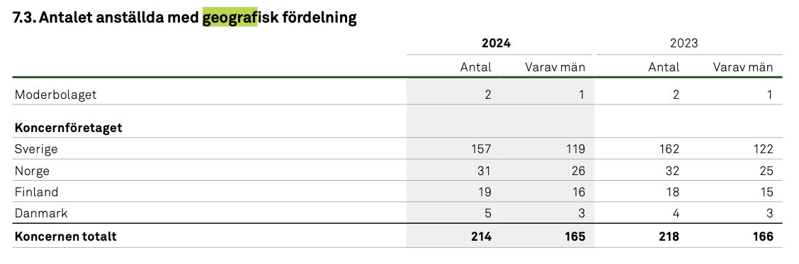
Precis som väntat är de flesta baserade i Sverige av de anställda.
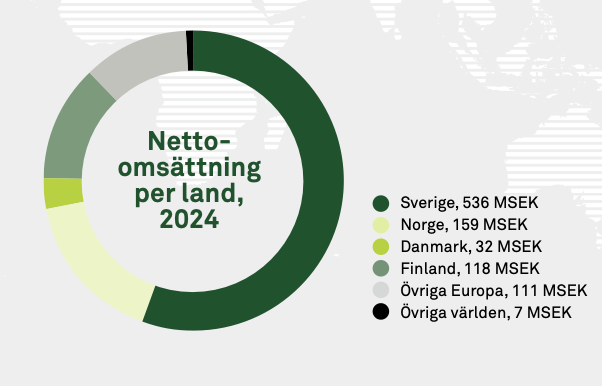
Makroekonomisk risk
Att bedriva en industrigrupp innebär alltid en drös risker, vissa som går att kontrollera och andra som inte går att kontrollera. Från vad jag kan läsa mig till verkar Berner göra allt vad ett bolag kan göra för att minimera riskerna samtidigt som det viktigt att fortsätta hålla tempo framåt. Berners decentraliserade struktur skapar mer flexibilitet för dotterbolagen att snabbt ställa om till nya ekonomiska situationer. Gruppens samlade finansiella ställning skapar robusthet om något dotterbolag går sämre.
Konkurrens
Det finns väldigt många serieförvärvade där ute, så en naturlig fråga är när objekten tar slut? Indutrade menar på att det finns väldigt väldigt många objekt där ute, det är ingen stor risk att de tar slut. Sedan har Indutrade generellt ene större marknad, då de är verksamma i hela Europa och till viss del även andra länder utanför Europa. Det ska finnas flera bolag som omsätter runt 50-150 miljoner som över tid kommer att ha intresse att bli en del av en större grupp.
Min take på konkurrensen är att det är lite tuffare än för 20 år sedan, men det finns också många fördelar för mindre bolag att vara en del av något större. Att slippa ägandeansvaret, att jobbat för att det är kul och få kunskapsdelning genom den bredare organisationen. Framtida multiplar på förvärvsobjekten kan väntas stiga till viss del över tid.
Kapitalallokering
Det finns fyra olika sätt för ett företag att allokera kapital:
- Återinvestera i befintlig verksamhet
- Förvärva verksamhet
- Återköp av aktier
- Utdelning
I dagsläget gör bolag allt förutom att återköpa aktier. Trots bolaget visar goda tecken på att man lyckats elegant allokera kapital inom förvärv som genererar tillfredsställande avkastning på kapital (>25%) så kommer antagligen Berner Industrier förbi ett bolag som delar ut pengar till sina aktieägare. Personligen vill jag helst se utdelning indragen då jag hellre vill att ledningen sätter den i arbete genom att förvärva något nytt eller återköper aktier om Berner själva handlas till en låg multipel.
Ledning & Styrelse
Aktieinnehav i Berner Industrier AB: 62 800 B-aktier inklusive närståendes innehav, 80 000 optioner, serie B – Caroline äger ca 0,2% av kapitalet. Bakgrund som affärsområdeschef på Lagercrantz. hon har sedan 2022 satt sin prägel på bolaget och styrt om till en decentraliserad struktur som nu är helt utrullad i hela organisationen.
Aktieinnehav i Berner Industrier AB: 13 018 B-aktier, 50 000 optioner serie B
Berner familjen styr över bolaget och Caroline har vd posten sedan 2022. Styrningen av dotterbolagen har varit genom en enorm rockad sedan 2022 då det enbart är en dotterbolags vd kvar, han sitter i Christian Berner OY (Finland).
Ledning
Mitt intryck av det nya teamet är att de känns hungriga och tror att det kan bli bra framåt. Belyser de viktigaste personerna i ledningen.
I min mening är vd Caroline Reuterskiöld och finanschef Henrik Nordin de viktigaste personerna i bolaget, de ska se till att operativa verksamheten rullar på, utvärdera nya förvärv och allokera kapital på bästa sätt för att skapa aktieägarvärde. Jag tror att de har bra förutsättningar för att göra ett bra jobb.
Styrelse
Styrelsen präglas av Joachim Berner som är styrelseordförande och tonförare för hela Berner Industrier genom sin stora aktiepost. I grunden verkar Joachim Berner en bra person, han har gått igenom mycket skit i form av mediedrev och kom till slut igenom det. I mina ögon känns han som en jordnära person, han har fem karriärtips som han delar med sig av:
Aktieinnehav i Berner Industrier AB: 1 250 000 A-aktier och 3 212 383 B-aktier genom Gårdaverken AB.
Aktieinnehav i Berner Industrier AB: 15 000 B-aktier. Concejo AB innehar 1 932 323 B-aktier.
- Se till att förstå företagets ägande. Det är viktigt att du delar deras värderingar.
- Våga vila i motgångarna och lär dig något av dem. Har du bråttom vidare, riskerar du att upprepa misstagen.
- Investera i företaget du jobbar i, om du kan. Jobbet blir mycket roligare.
- Ha ett rikt liv förutom jobbet och rör på dig. Jobbet är inte allt. I synnerhet när du inte har något.
- Var schysst. Folk du möter på vägen upp möter du på vägen ner.
“Se till att förstå företagets ägande. Det är viktigt att du delar deras värderingar.”
Jag tror det är viktigt att förstå Joachim för att förstå hur Berner Industrier kan tänkas röra sig om det sker en kris inom bolaget. Även viktigt att förstå att han har suttit som styrelseordförande i 36 år och har därmed säkert satt sin prägel på bolaget, gissningsvis är Berner Industrier hans baby och kör på en liknande uppsättning värderingar. Joachim har skrivit två böcker, en handlar om maskulinitet och andra handlar om hans egna historia när det blev ett mediadrev mot han. Sammantaget finns det mycket att läsa om kring Joachim.
Carl Adam Rosenblad är en annan styrelseledamot som äger mycket aktier. Det var han som sålde en del av sina aktier i sitt bolag Concejo AB till Thorndikes fond.
Aktien
Noterade på Nasdaq, ticker BERNER. Aktiekursen har inte varit särskilt spännande förutom i år då allt verkar ta fart efter att 2024 har varit svagt.
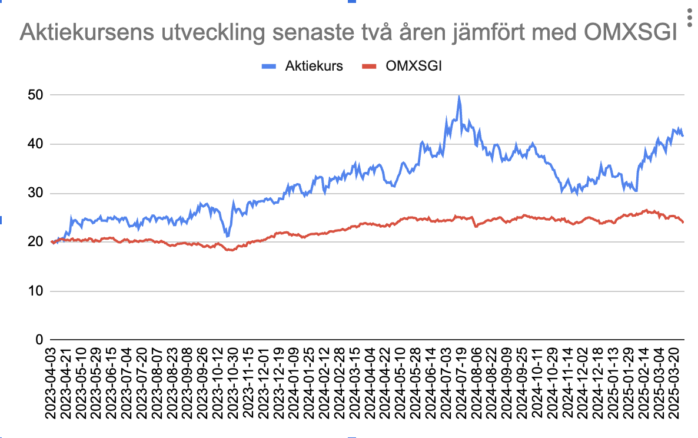
Bolaget har under senaste åren inte rört sig så mycket, främst för att det inte har hänt så mycket i bolaget som har varit direkt påverkade på siffrorna för aktieägarna, därmed har det inte varit några förväntningar på bolaget som har långsamt krattat i ordning på torpet för att nu gå in i en ny fas med ordning och read tillsammans med en lägre skuldsättning än tidigare. Bolaget har under 2025 rört sig från runt 35 sek aktien till dagens kurs på ca 48 sek. Viss överprestation mot index de senaste två åren, men ganska marginellt givet det är högre risk också.
Ägare
Screenshot från holdings, Berner familjen är i topp.
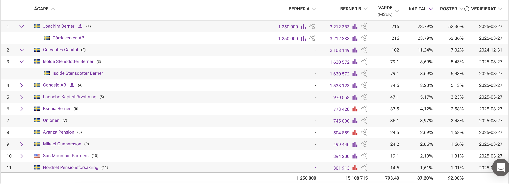
Cervantes Capital är Spotifys grundare Martin Lorentzon som har ett family office som rattas av David Zaudy. De äger bland annat även Note och Scandi Standard, där jag själv även äger Note, dock inte lika mycket som Cervantes Capital. Jag anser Cervantes vara en fin och långsiktig ägare.
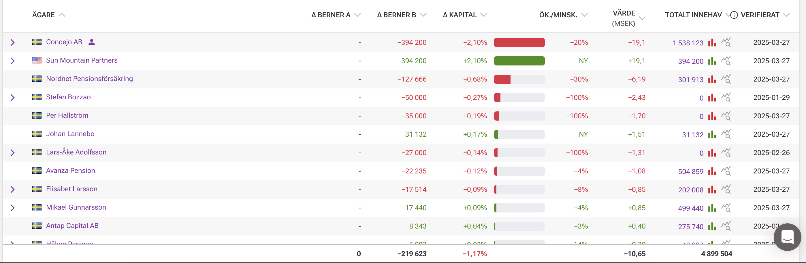
Carl Adam Rosenblad säljer aktier till Thorndike. Om du inte vet vem William Thorndike är så måste jag rekommendera att läsa boken The Outsiders, det är en otroligt bra bok och jag tolkar hans inköp i Berner som ett rejält stryketecken. William Thorndike har en djup förståelse för vad ett bolag ska göra för att allokera kapital på bästa sätt för sina aktieägare. Han är antagligen också positiv till att ta bort utdelningen i Berner Indsturier.Värdering
Skissar på 9% omsättningstillväxt under 2025 trots att Berner redan har förvärvat 6 procent med Autofric, sammantaget räknar jag med att teknisk distribution blir bättre och marginalerna går upp till 7 procent mot slutet av 2025. Det borde gå, speciellt med tanke på att autofric har en bättre marginal än resten av gruppen. Det ger en vinstmarginal på 5 procent som i sin tur leder till ett P/E för helåret 2025E på 18,4x — EV / EBIT vid samma tillfälle, justerat för förvärvet blir 14x.
Blickar vi framåt ett år till, helåret 2026E, så skissar jag återigen på samma omsättningstillväxt som tidigare på 9 procent, vilket känns konservativt och ganska lätt att nå givet att de fixat 9 procent även med ett kasst år som 2024 (Inga förvärv inskissat i detta scenario). Marginalerna ska upp en procent till, för att nå 5 procent vinstmarginal, då landar vi på 12x vinsten eller 9,4x ev/ebit.
Säg att fair value är runt 15x EV/EBIT och värderingen är densamma om två år från nu, då ska bolaget värderas upp med 59% under kommande två år. En aktie ska då vara värd 77 sek om två år. Diskonterat till dagens värde med 10 procent är den värd 64 sek. Det ger 32% potential från dagens kurs på 48,5 SEK.
Jag tror det finns potential att Berner levererar bättre än de 9% omsättningstillväxt och marginalförbättringar som är skissade på här, men vi behöver helt enkelt inte ta i mer för att kunna räkna hem bolaget med en tillfredställande margin of safety.
Diskussion
Landar i att Berner industrier är ett spännande bolag i en extra spännande fas. Fick först upp ögonen för bolaget under ett aktiemingel i samband med att Eddie Palmgren släppte sin översättniing av boken 100 baggers från Chris mayer. Jag pratade med Crimpen, som är en känd profil från forumet Börssnack, där han har lagt otroliga mängder tid på att kommentera och analysera case. Han sa under minglet att Berner Industrier var hans största innehav, pekade på att det är en ny vd som verkar bra som kommer från Lagercrantz mest lönsamma verksamhetsområde. Det fick mig att bli intresserade och tittade vidare på det.
Jag gjorde min initiala analys, kom fram till att det ser väldigt bra ut och att bolaget ser ut att vara i en väldigt spännande fas med lägre skuldsättning och låga förväntningar på att göra förvärv. Även organisationen har ställt om genom Carolines ledarskap och jag tror att det är mycket som kommer att gå smooth genom att hon själv har byggt ramen för hur Berner Industrier ska fungera, förhoppningsvis så sitter hon kvar som vd väldigt länge och skapar aktieägarvärde.
Över tid tror jag bolaget kommer att bli större och när Berner bevisat sig lite mer inom kapitalallokering och förvärven. Då anser jag även att det kan finnas utrymme att dra till med en högre multipel för verksamheten. Att Caroline själv varit det som skapat ramarna för Berner skapar en edge att hon har djup förståelse för hur verksamheten fungerar som kan vara svårare för en vd i en 50-100x större serieförvärvare.
Även om teknik och distribution kommer att lagga efter och ha marginal kommande år så är bolaget en mindre del av bolaget nu jämfört tidigare. Kärnbolagen, Zander och Swedenborg blir allt större del av omsättningen och drar därmed upp marginalen för hela gruppen när de växer vidare.
Investeringstes
- Sedan 2022 har bolaget ställt om till en decentraliserad struktur genom nya koncernchefen och vd Caroline Reuterskiölds ledarskap.
- Stor rockad bland dotterbolagen, 7/8 dotterbolag har en ny vd sedan 2022.
- Stark orderingång, bra cashflow från operations under Q4, bäddar för starkt 2025
- Underliggande kommer det finnas god efterfrågan för elektrifierade produkter som ersätter fossildrivna alternativ.
- Berner har amorterat på skulderna och ser ut att ha utrymme att förvärva något under 2025
- Värderingen på 18x ev/ebit i dagsläget känns inte som särskilt dyrt, potentialen framåt är runt 32 procent på två årssikt.
Sammanfattning
Berner Industrier är ett spännande bolag som förvärvar och föräldar bolag inom hållbar teknik och energi. Sammantaget har bolaget varit på en omvandlingsresa sedan 2021 när bolaget bestämde sig för att bli decentraliserade, skiftade vd och minskade skuldsättningen. Nu kliver bolaget in i en ny fas, med förvärv och förhoppningsvis lite bättre marknad.
Värderingen ser bra ut, det är inte särskilt dyrt och finns god potential att värderas högre framåt. Ledningen och styrelsen ser bra ut och extra plus i kanten att få med sig Thorndikes fond. Makroekonomiskt finns det risker som är svåra att mäta och kontrollera, jag tror oavsett att Berner står sig helt ok givet sin geografiska exponering.